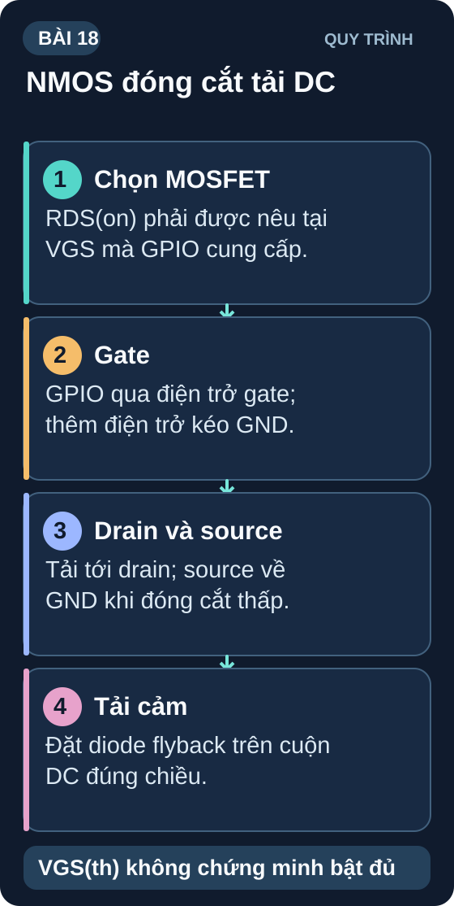
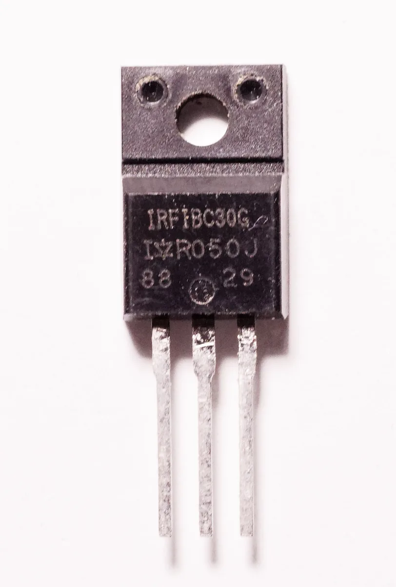
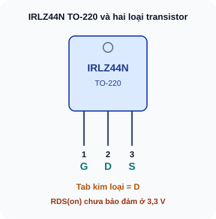
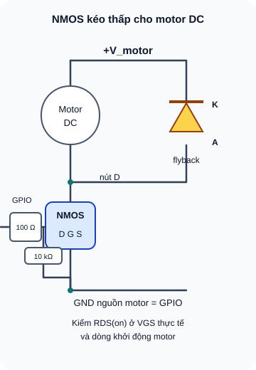

MOSFET — NMOS & PMOS
Transistor điều khiển bằng điện áp — dòng tải lớn, công suất nhỏ điều khiển, ứng dụng PWM motor và nguồn switching.
- Hiểu MOSFET điều khiển bằng điện áp V_GS, không cần dòng Gate
- Phân biệt NMOS và PMOS — cách cắm và chiều dòng
- Hiểu điện áp ngưỡng V_GS(th) và vùng tuyến tính vs bão hòa
- So sánh MOSFET với BJT — ưu nhược điểm thực tế
- Chọn MOSFET cho GPIO 3,3V theo R_DS(on) được bảo đảm tại điện áp Gate thực và dòng tải
- Thiết kế mạch switch NMOS điều khiển motor DC PWM
- Hiểu R_DS(on) và tại sao MOSFET ít nóng hơn BJT khi switch
- Cảnh báo: Gate ESD — không chạm Gate khi không có điện trở bảo vệ


Dụng cụ
| Tên | Thông số | SL |
|---|---|---|
| IRLZ44N để phân tích; MOSFET khác cho bài GPIO 3,3V | IRLZ44N TO-220 không có R_DS(on) bảo đảm tại 3,3V trong datasheet đã dẫn. Chỉ chọn linh kiện thực hành khi có R_DS(on) bảo đảm ở mức Gate dùng thật, đủ dòng khởi động và công suất nhiệt. | 1 mỗi loại nếu thực hành |
| MOSFET NMOS 2N7002 | SOT-23 cho tải tín hiệu nhỏ; không dùng thay transistor công suất lái motor | 2 |
| Motor DC 5V nhỏ | Hoặc LED dây 12V làm tải thay thế | 1 |
| Diode 1N4007 | Freewheeling cho motor | 2 |
| Điện trở 10kΩ, 100Ω (gate resistor), 10kΩ (pull-down) | ¼W | 3 mỗi loại |
| Nguồn 5–12V + breadboard + multimeter | — | 1 bộ |
1. MOSFET — Transistor điều khiển bằng điện áp
MOSFET (Metal-Oxide-Semiconductor Field-Effect Transistor) là transistor điều khiển bằng điện trường (điện áp), không cần dòng điện vào cực điều khiển. Ba chân của MOSFET:
- Gate (G) — Cực điều khiển. Trở kháng đầu vào cực cao (GΩ) — không cần dòng điều khiển (về lý thuyết).
- Drain (D) — Cực thu dòng (tương đương Collector của BJT)
- Source (S) — Cực phát dòng (tương đương Emitter của BJT)

Bản chữ của sơ đồ
IRLZ44N Infineon TO-220 nhìn mặt chữ, chân hướng xuống: G (1), D (2), S (3); tab kim loại cũng là D. BJT NPN điều khiển bằng dòng base; NMOS điều khiển bởi điện áp VGS. RDS(on) IRLZ44N chỉ bảo đảm tại VGS được nêu trong datasheet, không có bảo đảm tại 3,3 V.
2. Nguyên lý hoạt động NMOS
2.1 Vùng Cutoff — MOSFET tắt
V_GS < V_GS(th) → kênh dẫn không hình thành → I_D ≈ 0 → MOSFET hở giữa D và S.
2.2 Vùng tuyến tính (Ohmic/Triode) — MOSFET bão hòa như switch
V_GS >> V_GS(th) và V_DS nhỏ → kênh dẫn rộng → R_DS(on) nhỏ → MOSFET như điện trở nhỏ giữa D–S. Đây là vùng dùng khi làm switch (ON state).
2.3 Vùng bão hòa (Saturation) — MOSFET khuếch đại
V_GS > V_GS(th) và V_DS lớn → I_D gần như không phụ thuộc V_DS — dùng trong mạch khuếch đại analog.
MOSFET thông thường như IRF540N cần mức Gate cao hơn 3,3V để bảo đảm R_DS(on) thấp. Chọn MOSFET có R_DS(on) được bảo đảm tại V_GS=2,5V hoặc 3,3V cho ESP32, hoặc dùng driver Gate phù hợp. V_GS(th) chỉ đo ở dòng rất nhỏ, không chứng minh MOSFET đã mở đủ cho motor. Datasheet IRLZ44N chỉ bảo đảm R_DS(on) tại 4V, 5V và 10V; nếu thử trực tiếp ở 3,3V phải đo V_DS và nhiệt độ ở dòng tải thực tế.
3. MOSFET vs BJT — Chọn linh kiện nào?
| Đặc tính | BJT (BC547, BC337) | MOSFET (IRLZ44N, 2N7002) |
|---|---|---|
| Điều khiển bởi | Dòng I_B (cần dòng liên tục) | Điện áp V_GS (dòng Gate ≈ 0) |
| Dòng điều khiển | I_B = I_C/hFE (~mA) | ≈ 0 DC (chỉ dòng sạc Gate capacitance khi chuyển) |
| Tốc độ switch | Chậm hơn | Nhanh hơn (ns) |
| Tổn thất khi ON | V_CE_sat × I_C (~0,2V × I) | I² × R_DS(on) (thường nhỏ hơn) |
| Nhạy cảm ESD | Ít nhạy hơn | Rất nhạy — Gate oxide mỏng |
| Dùng tốt khi | Dòng nhỏ (<1A), khuếch đại analog | Dòng lớn, PWM tốc độ cao, power switch |
| Giá | Rẻ hơn | Đắt hơn một chút |
4. Thiết kế mạch switch NMOS — Điều khiển motor DC

Bản chữ của sơ đồ
Nguồn motor qua motor tới drain MOSFET; source về GND nguồn motor và GPIO. Diode flyback mắc song song motor, cathode về +V_motor, anode về drain. GPIO qua R_G 100 Ω đến gate; R_GS 10 kΩ nối gate–source. IRLZ44N không được bảo đảm RDS(on) tại VGS 3,3 V: chọn FET đúng áp gate hoặc driver; kiểm dòng khởi động motor và diode.
Lớp oxide Gate của MOSFET cực kỳ mỏng (~100Å). Điện tích tĩnh điện từ tay người (hàng trăm đến hàng nghìn volt) có thể đánh thủng Gate oxide → MOSFET hỏng vĩnh viễn. Luôn: (1) đeo vòng tay chống tĩnh điện khi cắm MOSFET; (2) có R_GS pull-down trong mạch; (3) không chạm trực tiếp chân Gate khi không cần thiết.
5. Thực hành: Mạch NMOS switch điều khiển motor/LED strip
Trước khi lắp, xác định đúng mã MOSFET, hãng và chân từ datasheet. Với GPIO 3,3V, chỉ dùng MOSFET có R_DS(on) được bảo đảm tại V_GS không cao hơn 3,3V ở dòng tải cần thiết, hoặc dùng driver Gate phù hợp. IRLZ44N ở ví dụ hình chỉ để phân tích; không tự động thay vào mạch GPIO 3,3V.
Lắp mạch: R_G(100Ω) từ GPIO vào Gate; R_GS(10kΩ) từ Gate xuống Source. Motor từ +V_motor đến Drain, Source xuống GND chung. Bắt buộc mắc diode ngược song song motor: cathode ở +V_motor, anode ở Drain. Nếu thay bằng LED strip, kiểm tra giới hạn dòng và cực tính của strip.
Kiểm dòng khởi động/kẹt trục của motor, định mức diode, nguồn và nhiệt của MOSFET; chỉ cấp nguồn sau khi các giới hạn đều đạt. Đưa đầu R_G lên mức Gate đã xác minh rồi về GND để thử bật/tắt. Không dùng GPIO 3,3V với IRLZ44N chỉ dựa trên V_GS(th).
Đo V_DS khi ON và ước lượng P≈V_DS×I_motor; ngắt nguồn nếu MOSFET nóng. Giá trị R_DS(on)=22mΩ trong datasheet IRLZ44N được chỉ định tại V_GS=10V, không bảo đảm tại GPIO 3,3V.
Thử PWM bằng
analogWrite(Arduino Uno) hoặc LEDC/analogWrite của Arduino-ESP32 sau khi cấu hình pin. Duty 50% có thể cho tốc độ thấp hơn nhưng không cố định bằng nửa tốc độ.
1: Tại điều kiện Gate 10V đã nêu, P_MOSFET = I² × R_DS(on) = 25 × 0,022 = 0,55W. Với BJT công suất được định mức 5A và V_CE_sat giả định 0,3V, P_BJT = 1,5W. BC337 không chịu được 5A. Cả hai kết quả cần kiểm tra tản nhiệt và điều kiện datasheet trước khi sử dụng.
2: GPIO 3,3V không bảo đảm IRF540N dẫn đủ dòng; V_GS(th) chỉ là ngưỡng ở dòng thử rất nhỏ, không dùng để tính tổn hao motor. Chọn MOSFET có R_DS(on) được bảo đảm tại V_GS=2,5V hoặc 3,3V và đủ dòng/tản nhiệt, hoặc dùng mạch lái Gate có nguồn phù hợp. IRLZ44N cũng phải kiểm tra vì thông số R_DS(on) trong datasheet thường được chỉ định từ V_GS=4V trở lên.
3: Gate có tụ ký sinh C_GS, C_GD (~nF). Không có R_G: khi switch, dòng sạc/xả tụ Gate rất lớn tức thời → có thể kích thích dao động ký sinh (ringing) → over-voltage spike → hỏng Gate. R_G=100Ω giới hạn tốc độ sạc Gate → giảm ringing. Trade-off: làm chậm tốc độ switch một chút.
4: I_pulldown = 3,3V/10kΩ = 0,33mA. Khi MOSFET ON liên tục (duty cycle 100%), P_R_GS = 3,3×0,00033 = 1,1mW → không đáng kể. Nhưng với PWM 50%, tổn thất chỉ 0,55mW — bỏ qua được.